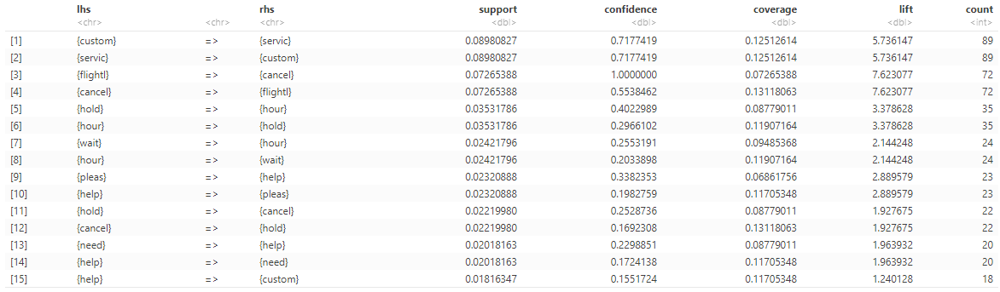
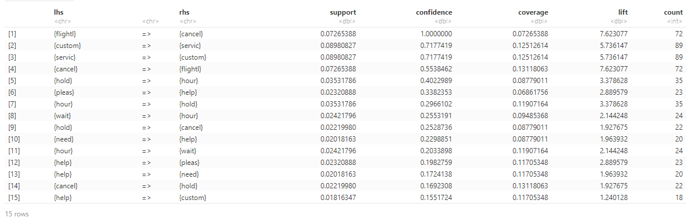
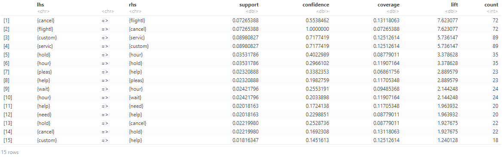
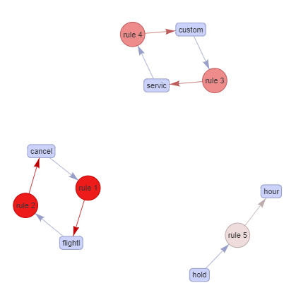
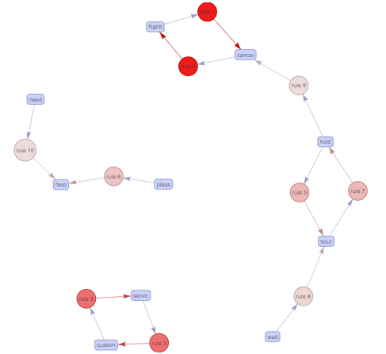

Association Rule Mining
Overview
The primary goal is to uncover hidden patterns, dependencies, and associations between items, events, or variables
that co-occur frequently in the dataset. This technique is widely used in various domains, including retail, marketing, healthcare, and telecommunications.
ARM on customer tweets could uncover understanding of customer sentiments, preferences, and the factors influencing their experiences, leading to more targeted and effective decision-making.
This technique could uncover what kind of words could influence custom experience.
Data Prep
ARM typically works with transactional datasets where each record represents a transaction. A transaction is a set of items, events, or attributes
that occur together. For example, in retail, a transaction could be a customer's purchase, and the items purchased are the transaction items.
Link to the data
Code
Here is the code to create transaction data from tabular data and then implement ARM on it.
Results
Let's take a look at the rules order by decresing support:
Let's take a look at the rules order by decresing confidence:
Let's take a look at the rules order by decresing lift:
Network plots are a convenient way to understand these rules. The following plots represent top 5 rules sorted by lift

Addtionally, the top 10 rules sorted by confidence, respectively.
Conclusion
Words such as "please", "help" and "need" are mostly used together and implies that the customer sentiment is on verge to be negative.
Words such as "wait", "hold" and "hour" were found to be related in top 10 rules sorted by confidence, indicating high cooccurence.